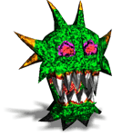

敵から逃げ回るしかなかったビットマンも、８ビットからはスペシャルアタックでモンスターを倒せるようになります。１ステージでの使用回数は限られていますが、敵を倒せばスコアも加算されるので、積極的に使いましょう。
 どのステージにもモンスターがうようよしています。触れられるとやられてしまい、ライフが１つ減ってしまいます。 動きをよく見て、上手くかわしましょう。
モンスターにやられた場合、その場所から再開します。モンスターだけは元の場所へ戻ります。 ライフが全てなくなった場合には、
「コンティニュー」を選ぶことでそのステージからやり直すことが出来ます。

 敵から逃げ回るしかなかったビットマンも、８ビットからはスペシャルアタックでモンスターを倒せるようになります。１ステージでの使用回数は限られていますが、敵を倒せばスコアも加算されるので、積極的に使いましょう。
敵から逃げ回るしかなかったビットマンも、８ビットからはスペシャルアタックでモンスターを倒せるようになります。１ステージでの使用回数は限られていますが、敵を倒せばスコアも加算されるので、積極的に使いましょう。